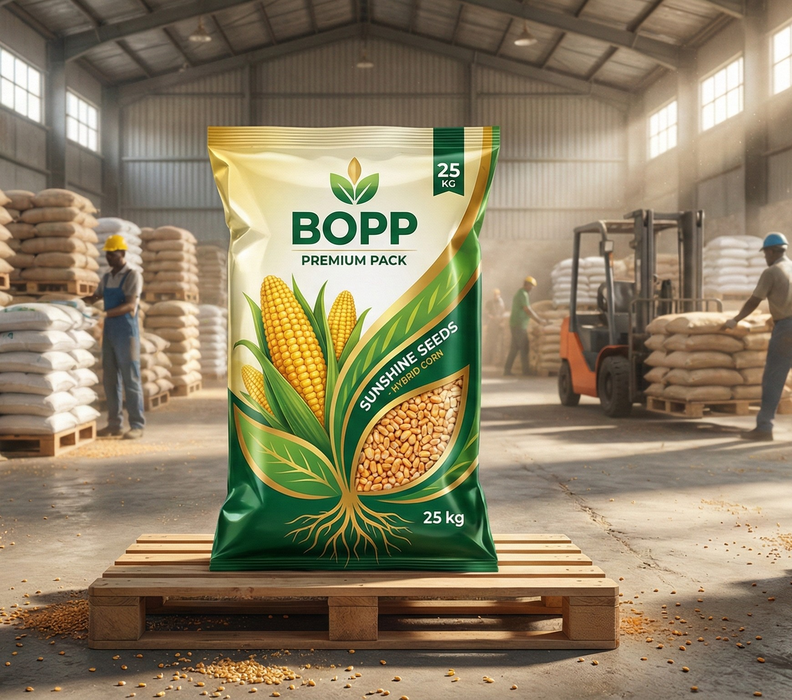

Seed Packaging Bags Manufacturer in Morbi, Gujarat

Mega Polybag is a leading manufacturer of high-quality
Seed Packaging Bags designed to protect seeds from moisture,
contamination, and external damage. Our seed bags help maintain
seed quality, germination rate, and shelf life during storage
and transportation.
Why Seed Packaging Bags Are Important?
Seeds are highly sensitive products that require safe and controlled
packaging. Proper seed packaging prevents moisture absorption,
physical damage, and contamination.
- ✔ Protects seeds from moisture & humidity
- ✔ Maintains seed quality and germination
- ✔ Prevents contamination & spillage
- ✔ Easy handling and stacking
- ✔ Long-term storage safety
Material & Specifications
- Material: PP Woven / BOPP Laminated
- Optional LDPE liner for moisture protection
- Available sizes: 1kg, 5kg, 10kg, 25kg
- Strong stitching and sealing
- Multi-color printing with brand logo
Applications of Seed Bags
- ✔ Agricultural Seeds
- ✔ Vegetable Seeds
- ✔ Hybrid Seeds
- ✔ Research & Certified Seeds
- ✔ Agro Seed Companies
Why Choose Mega Polybag?
- ✔ In-house manufacturing in Morbi, Gujarat
- ✔ Strict quality control process
- ✔ Reliable moisture-resistant packaging
- ✔ Competitive pricing
- ✔ Bulk orders & timely delivery
Frequently Asked Questions
Do seed bags come with liner?
Yes, we provide LDPE liner options for moisture protection.
Can you customize printing and size?
Yes, we offer full customization including size, color, and branding.
Are these bags suitable for long-term storage?
Yes, our seed packaging bags are designed for safe long-term storage.